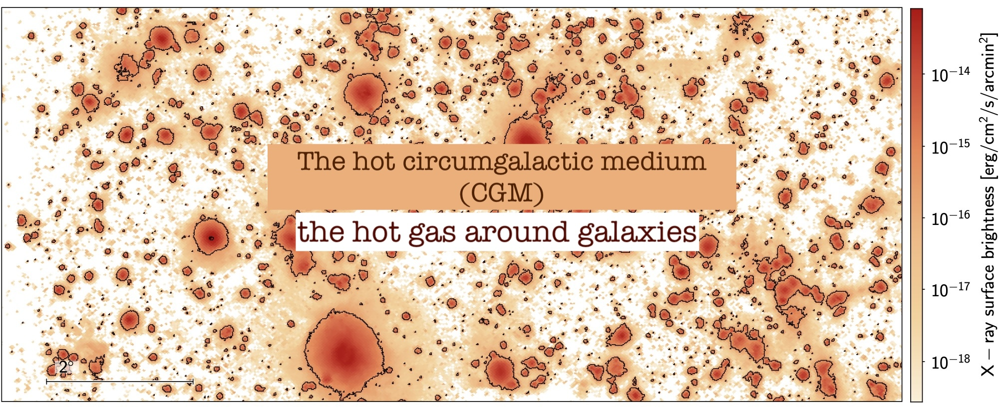
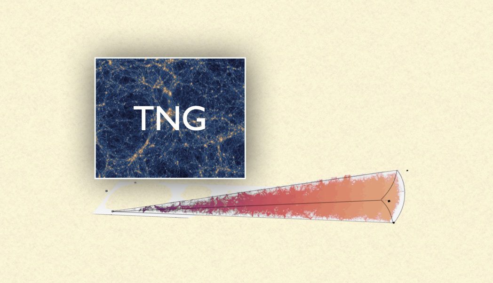
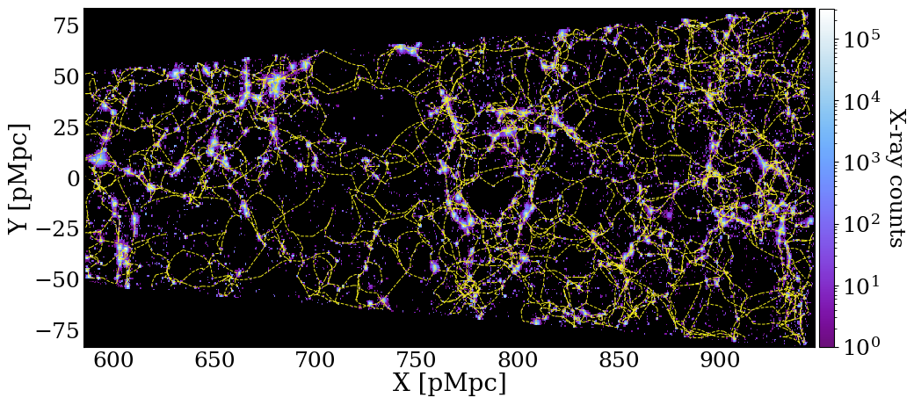
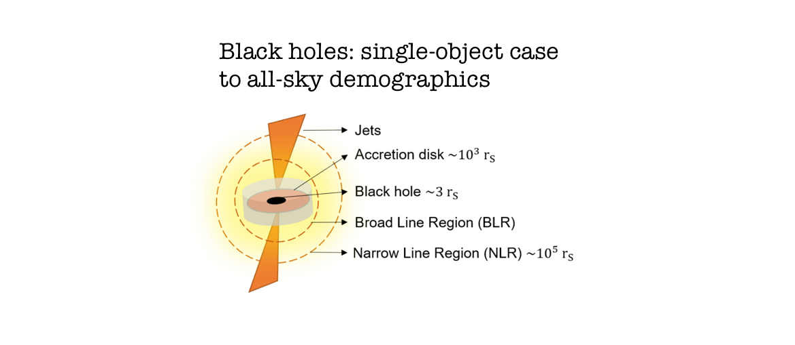
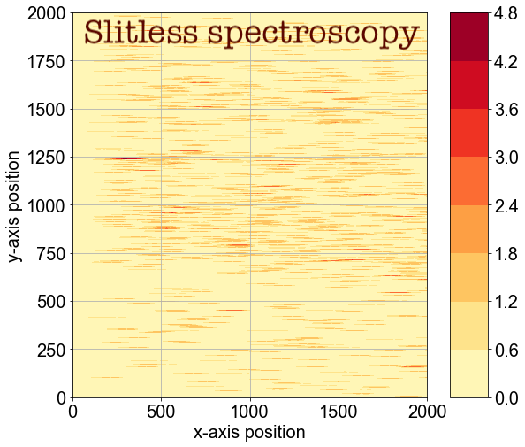
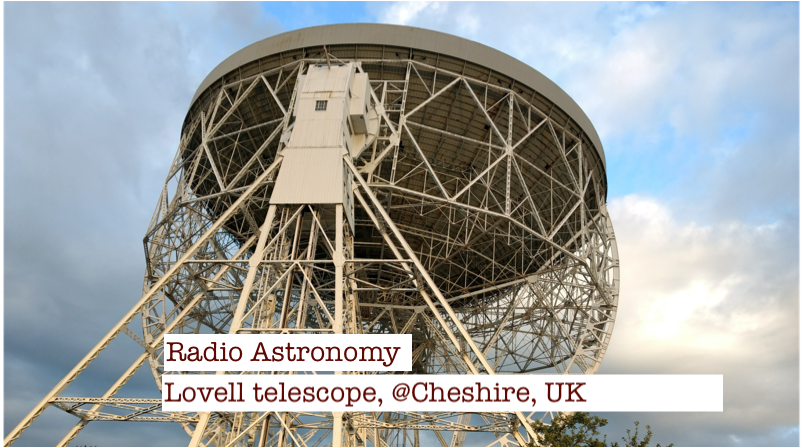
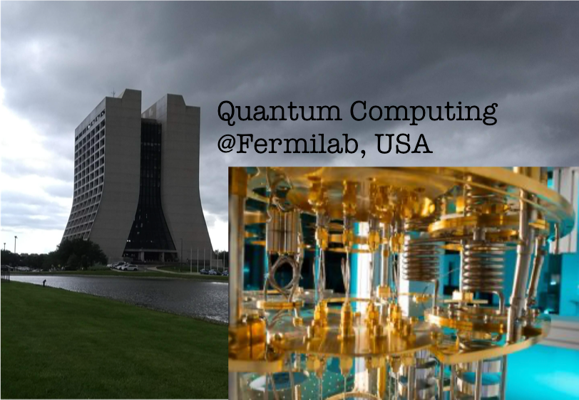

Soumya Shreeram
Quick links:
My work on various science projects over the years are summarized below.
Science Projects

My work on the hot CGM
Using my IllustrisTNG-based lightcone, I led a study on the projection effects in the X-ray emitting hot CGM around galaxies.
View publication here
See also my work on building a forward-model for X-ray data from eROSITA to retreive the hot CGM.View publication here

Construction of X-ray Lightcones from Hydrosims
My work on building X-ray lightcones from IllustrisTNG to study the hot gas around galaxies.
View further info
The cosmic web
My work on cosmic web classification and it's impact on the hot CGM.
View publication here
My work on building observational filament catalogs for detecting filaments in X-rays with eROSITA.
View on GitHub

Black holes
I worked on modelling the spectra of black hole X-ray binary GRS 1915+105 at Oxford, UK.
View publication here
My master thesis work was on modifing the demographics of the Active Galactic Nuclei in dark matter only simulations.
View on GitHub (thesis therein)

Study of the Galactic Centre Region of the Milky Way Using Slitless Spectroscopy
This project, conducted at MPIA, Heidelberg, Germany, aimed to distinguish between early and late-type stars in the Galactic Centre Region using Slitless Spectroscopy.
See code and project report on Github.

Pulsars: radio astronomy
This experiment investigates pulsar properties. The data for the experiment was obtained from the radio telescopes at Jodrell Bank Observatory, Cheshire.
Visit the website showing our results

Studying Qubit Interactions with Multimode Cavities Using QuTiP
My work on using QuTiP, a quantum computing framework, to simulate interactions between two-qubits coupled with each other via three resonators.
View code and report here
AI/ML in astronomy
During my masters, I worked on classifying SDSS spectra using Neural networks.
View on Github (final report therein)
I also worked on applying neural networks in the field of microlensing, for classifying the source radius of microlensing light curves.
View on GitHub (final report therein)
Contact
You can reach me at shreeramsoumya [at] gmail [dot] com.